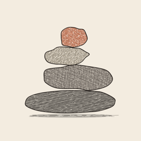

Life with God is a gift, not a grade.
Why werkLife exists, and what it’s trying to be.
Why I’m making it
I wanted something that would help me build a habit, and keep nudging me toward it until it became something I’m drawn to do on my own.
It isn’t always easy. I’m the one making werkLife, and I still need the help.
What it’s built on
- The Word first. Each day starts with one verse. In the app, parchment always means Scripture: it’s the one paper surface on the page.
- Noticing, for everyone, every day. Seeing God in the little moments isn’t a goal with a target. It’s four taps you can reach all day and a short look back in the evening.
- Small steps, no scores. A practice can be done, taken as a small step, or rested. A small step counts as showing up. There are no streaks, points or percentages, and a day you didn’t mark is never called a miss.
- Room for lament. “Be near” is a prayer for the hard hours, with no words expected. About a third of the Psalms are lament, and an app that only says thank you would teach forced cheer.
- Sunday goes somewhere. A sermon’s verse for the week leads the next few days, and its calls to action land on Today, tied to a moment in your day.
- The machinery stays out of sight. No stages to manage and no levels to climb. The app should feel like a quiet notebook, not a dashboard.
The cairn
werkLife’s mark is a cairn of field stones. It isn’t a level meter. It’s a remembrance, like the stone Samuel set up after the Lord helped Israel. Stones are added and never taken away.

Afterward, Samuel took a stone and set it up between Mizpah and Shen. He named it Ebenezer, saying, “Thus far the Lord has helped us.”
What it isn’t
- It isn’t a scoreboard. No points, levels, leagues or streak counts.
- It isn’t social. There’s no account and nothing public. What you write is yours.
- It isn’t finished. werkLife is in testing. Today, Sermons, Read and the seasonal openings are there to try. The journal and verse memory are still being built.
Try it
If you’d like to try werkLife while it’s in testing, or just hear when it’s out, email privacy@werkey.tech. Thoughts and questions are welcome too.